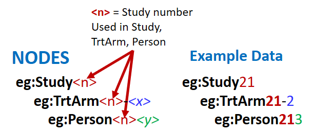

Linked Data for Clinical Trials
Hands-on Workshop
PhUSE EUConnect18
Frankfurt, Germany
2018-11-05
Instructors
Tim Williams
Johannes Ulander
Preparation
- Your laptop [Power up!]
- Copy of:
- Exercises
- Graph Editor Introduction
- Info sheet
- SPARQL reference
- Log in to Cloud Server
(for later)
Outline
- (very brief) Introduction to Linked Data
- Create a Study Graph
- Query Graph Data
- Ontology and Inference
- Merge Studies
- Discussion
Outline
Outline
- Introduction to Linked Data
- Create a Study Graph
- Query Graph Data
- Ontology and Inference
- Merge Studies
- Discussion
Different types of Linked Data
Property Graph
Resource Description Framework (RDF)
Data as a Graph?
MIN A Triple Describing Person 1
A Triple Describing Person 1
Person 1 Name and Age
"Things" need unique identifiers
IRI: Internationalized Resource Identifier
- Unique Identifier
- Uses HTTP://xx.xx.xx/xxxx
Workshop Prefixes
- Prefixes shorten IRIs for readability
@prefix eg: <http://example.org/LDWorkshop#> . @prefix ncit: <http://ncicb.nci.nih.gov/xml/owl/EVS/Thesaurus.owl#> . @prefix schema: <http://schema.org/> .
literals
- string
- number
- integer (INT)
- date
No links from a literal
Outline
- Introduction to Linked Data
- Create a Study Graph
- Query Graph Data
- Ontology and Inference
- Merge Studies
- Discussion
Introduction to the Graph Editor
Reference: .../doc/Graph Editor Introduction.pdf
Naming Conventions
Nodes in the exercises
Numbering
To create unique IRIs

Exercise
1. Create a Study Graph
Outline
- Introduction to Linked Data
- Create a Study Graph
- Query Graph Data
- Ontology and Inference
- Merge Studies
- Discussion
Exercise
2. Query Graph Data
Outline
- Introduction to Linked Data
- Create a Study Graph
- Query Graph Data
- Ontology and Inference
- Merge Studies
- Discussion
Ontology
A vocabulary of things and how they relate to each other
- ...just more nodes and links
- Tools: Protege, TopBraid
Reasoner
An engine that applies the ontology to the graph and infers information values and relationships not in your original data.
Think about that again:
Ontologies and Reasoning create values
and relations
not in your original data!

StudyOntology.TTL
A Subset of the study ontology file
Exercise
3. Ontology and Inference
Outline
- Introduction to Linked Data
- Create a Study Graph
- Query Graph Data
- Ontology and Inference
- Merge Studies
- Discussion
When IRIs are the same, merging is automagic!

With RDF, Merging be like:
What? How?
Exercise
4. Merge Studies
Drug 1 Pool
Network GraphOutline
- Introduction to Linked Data
- Create a Study Graph
- Query Graph Data
- Ontology and Inference
- Merge Studies
- Discussion
But first: Acknowledgements
- PhUSE - server costs
- Stephen Bamford
- Chris Decker - server cloning
- PhUSE Admin Team and the Session Coordinators
- ...everyone else I forgot to mention
- And: YOU!
But Second: Resources
- Workshop materials, including the Graph Editor, SPARQL scripts, PDF of this presentation:
https://github.com/phuse-org/LinkedDataWorkshop/EUConnect18
- And watch this space:
- https://github.com/phuse-org/LinkedDataEducation
Resources
Introduction to Semantic Web
What is Linked Data?
Introduction to Linked data
Discussion
TT04: "Overcoming Resistance to Technology Change: A Linked Data Perspective"
When: Tues 1:30pm
Where: Solar
Discussion
Really, at last, for everyone!
Extra Slides
SDTM can be improved
- Non-extensible, two dimensional
- Data repetition
- Terminology, codes not linked
- Version Conversion: time, $£€
- Does not model study entities
- Lacks integral metadata
... and more.
- 26% of CDER SDTM applications: at least 1 error
Opportunites
- Merge data from diverse sources (no silos!)
- Data integration across the life cycle
- Integral Metadata
- High quality submissions data
- New ways to explore and analyze
- Build a foundation for AI and ML
- [!! YOUR IMAGINATION !!]